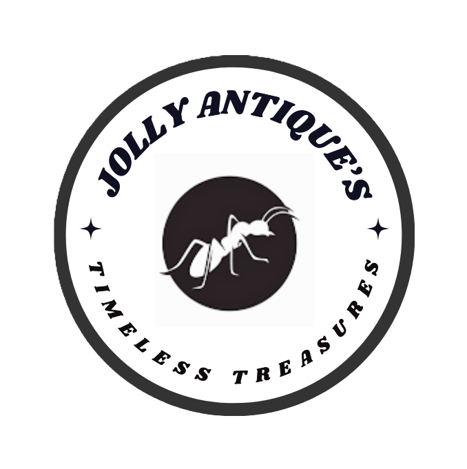

Where Timeless Treasures Find New Homes!
At Jolly Antique's, we are passionate about preserving history and bringing timeless treasures into new hands. As a dedicated antique store, we specialize in buying and selling a diverse collection of vintage and antique items, including furniture, jewelry, artwork, collectibles, and rare finds from different eras. Whether you're a seasoned collector, a history enthusiast, or simply searching for a unique piece with character, our carefully curated selection offers something for everyone.
We also buy antiques, ensuring that cherished items find a new home where they will be appreciated for years to come. Our commitment to quality and authenticity means every item has a story waiting to be discovered. Visit us and explore a world of history, craftsmanship, and timeless beauty!